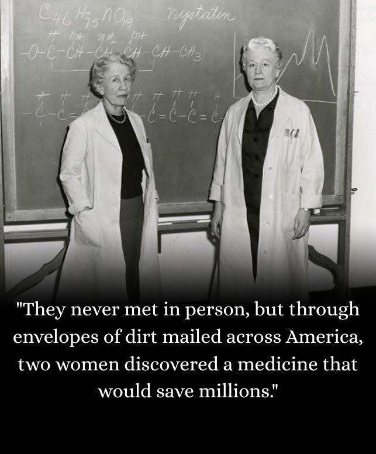

The story of how the very first antifungal drug nystatin was discovered in the late 1940’s.
It has an awful lot in common with how another famous antifungal drug— rapamycin— would be discovered many years later. (This drug rapamycin is now at the center of cutting-edge research on the causes of human aging.)
In fact, this particular success story was probably the inspiration for collecting soil samples on Easter Island in the first place (where rapamycin was discovered).
The drug nystatin generated $13 million in royalties for these two women who ultimately patented it, and they gave it all away to fund further scientific research. They never made a penny on it, by intention. The drug has saved millions of lives worldwide.
#rapamycinHD #mtorHD #nystatinHD
They never met in person, but through envelopes of dirt mailed across America, two women discovered a medicine that would save millions.
Late 1940s. While newspapers celebrated generals and presidents rebuilding a post-war world, two scientists were quietly conducting their own revolution—one that would reshape medicine using nothing more than soil samples and postage stamps.
Rachel Fuller Brown, a chemist in Albany, New York.
Elizabeth Lee Hazen, a microbiologist in New York City.
Two brilliant women. Two separate laboratories. One extraordinary partnership conducted almost entirely through the mail.
They had a mission that seemed almost absurdly simple: find something in ordinary dirt that could fight fungal infections. At the time, bacterial infections had penicillin and other antibiotics. But fungal diseases? Medicine had no safe, effective answer. Systemic fungal infections were often death sentences.
Their method was as humble as it was ingenious.
Elizabeth would collect soil samples—from farmers' fields, backyard gardens, friends across the country. Each sample potentially contained millions of microorganisms, any one of which might hold the key to saving lives.
She'd carefully package the dirt and mail it to Rachel in Albany.
Rachel would then begin the painstaking work: isolating microbes from each sample, testing them methodically, searching for any organism that could kill fungal cells without harming human cells. Sample after sample. Test after test. Month after month.
It was slow, tedious work that required extraordinary patience. Most samples yielded nothing useful. But they kept going, maintained by a shared conviction that the answer existed—somewhere in America's soil, waiting to be found.
Then, in 1950, from a soil sample Elizabeth had collected on a friend's farm in Virginia, came the breakthrough.
A microorganism called Streptomyces noursei produced a compound that did exactly what they'd been searching for: it killed fungal cells while leaving human cells unharmed.
They called it nystatin—named after the New York State Department of Health that supported their work.
Nystatin became the world's first safe and effective antifungal antibiotic for humans.
It cured thrush in infants—a fungal infection that could make babies unable to eat. It treated athlete's foot and ringworm. Most critically, it saved lives by treating systemic fungal infections that had previously been untreatable and often fatal, especially in patients with weakened immune systems.
But nystatin's impact extended far beyond human medicine in ways nobody anticipated.
Art conservators discovered that nystatin could protect priceless paintings, manuscripts, and historical artifacts from mold damage. Museums began using it to preserve works that had survived centuries, only to face destruction from fungal growth.
The Sistine Chapel's frescoes. Ancient manuscripts in libraries. Historical documents. Rare books. All protected by a compound discovered in Virginia dirt.
Forestry researchers used it to protect tree seedlings from fungal diseases.
The pharmaceutical industry built upon it, developing new antifungal medications inspired by Brown and Hazen's discovery.
By the time the patent expired in 1974, nystatin had generated over $13 million in royalties.
Brown and Hazen could have become wealthy. They'd earned it—years of unglamorous work, brilliant scientific insight, and a discovery that saved countless lives.
They gave it all away.
Every penny of their royalties went to establish the Brown-Hazen Fund, specifically designed to support scientific research—with particular focus on helping young scientists, women in science, and researchers who might not have access to traditional funding sources.
They understood something profound: the next breakthrough might not come from someone with prestigious degrees and well-funded labs. It might come from someone like them—someone persistent, curious, and willing to do slow, humble work that others overlooked.
Someone who just needed a chance.
The Brown-Hazen Fund has supported hundreds of researchers over decades, funding work that led to numerous scientific advances. Brown and Hazen's generosity created a ripple effect—their discovery funding other discoveries, which funded still more discoveries, an endless chain of scientific progress built on their refusal to keep what they'd earned.
Rachel Fuller Brown and Elizabeth Lee Hazen weren't celebrities. They didn't seek fame. They worked in separate cities, communicating through letters and packages, never letting physical distance diminish their collaboration.
When they won the Squibb Award in Chemotherapy in 1955—one of the highest honors in pharmaceutical research—they were almost surprised anyone was paying attention.
But their impact was undeniable. By 2000, it was estimated that nystatin had generated over $500 million in sales for pharmaceutical companies. The lives saved? Incalculable.
Rachel Brown passed away in 1980. Elizabeth Hazen died in 1975. Both lived to see their discovery transform medicine, but neither ever pursued the wealth or fame that could have been theirs.
Their legacy asks uncomfortable questions about how we measure scientific contribution.
How many brilliant discoveries have we missed because we only fund prestigious institutions? How much potential genius exists in people who lack access to elite laboratories?
Brown and Hazen proved that world-changing science can happen through unconventional partnerships, with modest resources, using methods so simple they seem almost naive—like mailing dirt samples across state lines.
They proved that generosity compounds. That giving away your success creates more success than hoarding it ever could.
And they proved something even more fundamental: that the answers to humanity's greatest challenges might be lying in ordinary soil beneath our feet, waiting for someone patient enough, curious enough, and generous enough to find them.
Two women who never worked in the same room changed the world through envelopes full of dirt.
They didn't need fame. They didn't need wealth. They just needed partnership, persistence, and a profound belief that science exists to serve humanity—not the other way around.
Somewhere right now, a baby with thrush is being treated with nystatin derivatives, able to eat and thrive.
Somewhere, a museum conservator is protecting a Renaissance masterpiece from mold.
Somewhere, a young scientist is receiving funding from a program inspired by the Brown-Hazen model of scientific generosity.
And in all of those moments, two women who chose collaboration over competition, persistence over prestige, and generosity over wealth are still changing the world.
One envelope at a time.
Real genius doesn't always announce itself with fanfare. Sometimes it arrives quietly, in a package of Virginia dirt, examined patiently by two scientists who understood that the greatest discoveries aren't found—they're shared.
